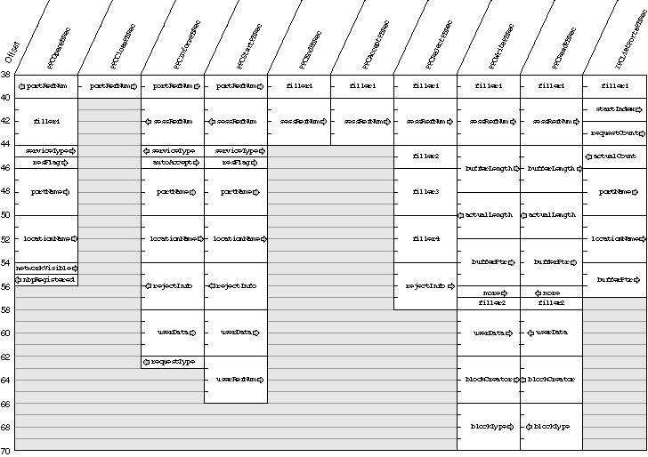

Data Structures
This section describes the PPC parameter block, PPC port record, location name record, and port information record.The PPC Toolbox Parameter Block
PPC Toolbox functions require a pointer to a PPC parameter block. You must fill out any fields of the parameter block that the specific PPC Toolbox function requires.TYPE PPCParamBlockRec = RECORD CASE Integer OF 0: (openParam: PPCOpenPBRec); {PPCOpen params} 1: (informParam: PPCInformPBRec); {PPCInform params} 2: (startParam: PPCStartPBRec); {PPCStart params} 3: (acceptParam: PPCAcceptPBRec); {PPCAccept params} 4: (rejectParam: PPCRejectPBRec); {PPCReject params} 5: (writeParam: PPCWritePBRec); {PPCWrite params} 6: (readParam: PPCReadPBRec); {PPCRead params} 7: (endParam: PPCEndPBRec); {PPCEnd params} 8: (closeParam: PPCClosePBRec); {PPCClose params} 9: (listPortsParam: IPCListPortsPBRec); {IPCListPorts } { params} END;Figure 11-18 on the next page shows the PPC Toolbox parameter blocks. Note that the reserved fields are not included in the illustration. TheqLink,csCode,intUse,intUsePtr, and reserved fields are used internally by the PPC Toolbox. Your application should not rely on the PPC Toolbox to preserve these fields across calls.Your application transfers ownership of the PPC Toolbox parameter block (and any buffers or records pointed to by the PPC Toolbox parameter block) to the PPC Toolbox until a PPC function is complete. Once the function completes, ownership of the parameter block (and any buffers or records it points to) is transferred back to your application. If a PPC Toolbox function is executed asynchronously, your program cannot alter memory that might be used by the PPC Toolbox until that function completes.
Figure 11-18 The PPC Toolbox parameter blocks

A PPC Toolbox function that is executed asynchronously must specify
NILor the address of a completion routine in theioCompletionfield of the PPC parameter block. TheioResultfield should be used to determine the actual result code when an asynchronously executed PPC Toolbox function completes. If you specify a completion routine in theioCompletionfield, it is called at interrupt time when the PPC Toolbox function completes execution. See page 11-79 for the routine declaration for a completion routine.